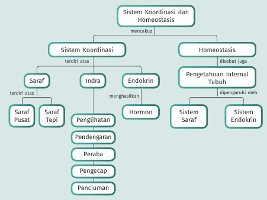
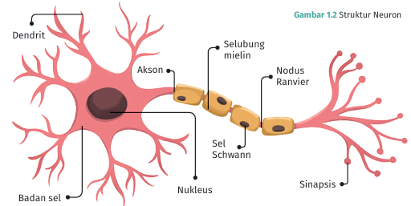
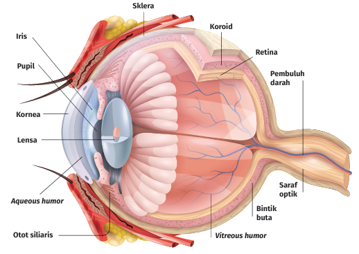
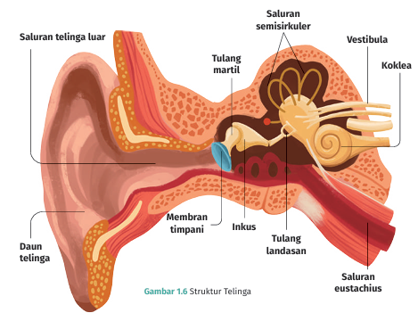
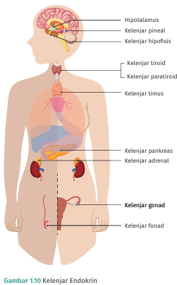
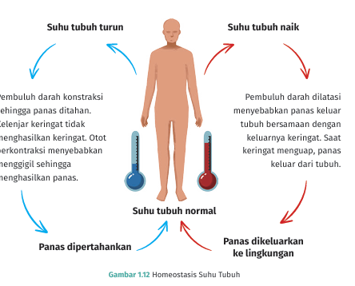
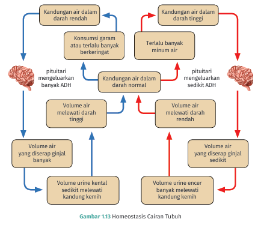
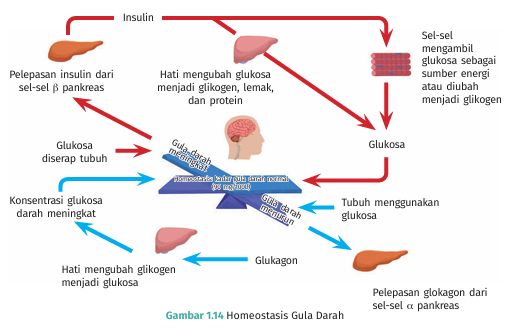

BAB 1
Sistem Koordinasi dan Homeostasis Tubuh Manusia
Disusun berdasarkan Peta Konsep Bab 1 — untuk belajar mandiri secara bertahap

Gambar 0. Peta Konsep Bab 1: Sistem Koordinasi dan Homeostasis
🔑 Cara Menggunakan Materi Ini
- Pelajari materi berurutan sesuai alur peta konsep: Sistem Koordinasi → Homeostasis.
- Setiap sub-bab memuat 'Kunci Materi' (kotak hijau) berisi inti yang wajib kamu ingat.
- Kotak kuning 'Pengayaan' berisi materi tambahan di luar buku wajib.
- Kerjakan 'Cek Pemahaman' di akhir setiap bagian.
A. Sistem Koordinasi Manusia
Sistem koordinasi adalah sistem dalam tubuh yang bertugas mengatur dan mengoordinasikan seluruh aktivitas tubuh agar tubuh dapat merespons rangsangan dari luar maupun dari dalam tubuh secara tepat.
1. Sistem Saraf Manusia
Sistem saraf berfungsi untuk menerima, mengolah, dan merespons rangsang.
a. Struktur dan Fungsi Neuron

Gambar 1.2 Struktur Neuron
| Bagian Neuron | Fungsi |
|---|
| Dendrit | Menerima impuls dari sel lain |
| Badan sel | Pusat pengaturan aktivitas sel saraf |
| Akson | Meneruskan impuls ke sel saraf lainnya |
| Selubung mielin | Mempercepat jalannya impuls |
🔑 Kunci Materi — Sistem Saraf
- Neuron memiliki 3 jenis: sensoris, motoris, konektor
- Sistem saraf pusat = otak + medula spinalis
- Gerak sadar dikendalikan otak, gerak refleks dikendalikan medula spinalis
2. Alat Indra Manusia
a. Indra Penglihatan (Mata)

Gambar 1.5 Bagian Mata
b. Indra Pendengaran (Telinga)

Gambar 1.6 Struktur Telinga
c. Indra Penciuman (Hidung)
d. Indra Pengecap (Lidah)
🔑 Kunci Materi — Alat Indra
- 5 indra: mata, telinga, hidung, lidah, kulit
- Semua indra bekerja sama dengan sistem saraf
3. Sistem Endokrin

Gambar 1.10 Kelenjar Endokrin
B. Homeostasis
Homeostasis adalah proses otomatis tubuh untuk mempertahankan kondisi internal tetap stabil.
Pengaturan Suhu Tubuh

Gambar 1.12 Homeostasis Suhu Tubuh
Pengaturan Cairan Tubuh

Gambar 1.13 Homeostasis Cairan Tubuh
Pengaturan Gula Darah

Gambar 1.14 Homeostasis Gula Darah
🔑 Kunci Materi — Homeostasis
- Suhu tubuh diatur oleh hipotalamus (±37°C)
- Kadar cairan diatur hormon ADH
- Gula darah diatur insulin dan glukagon